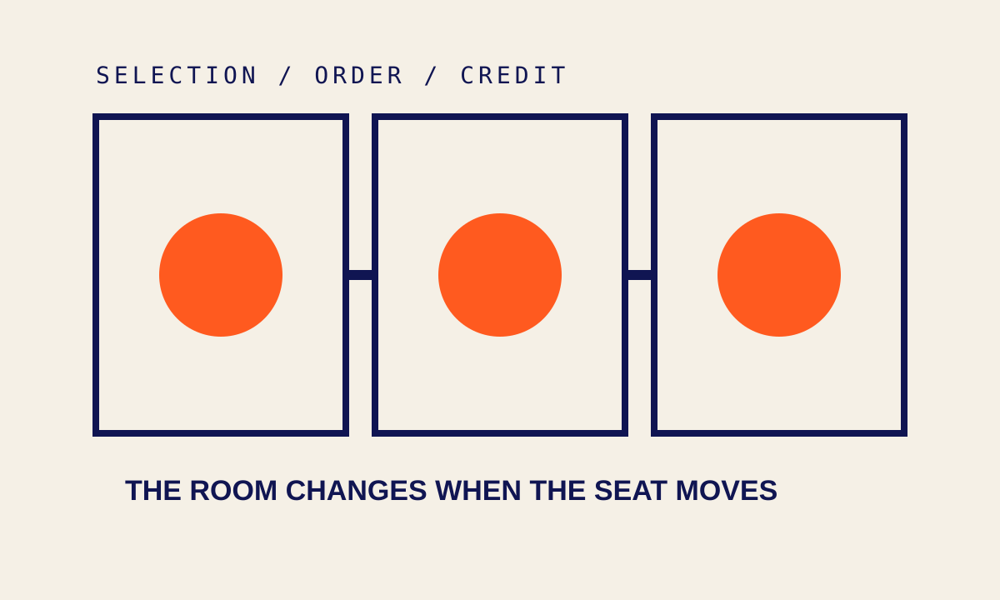
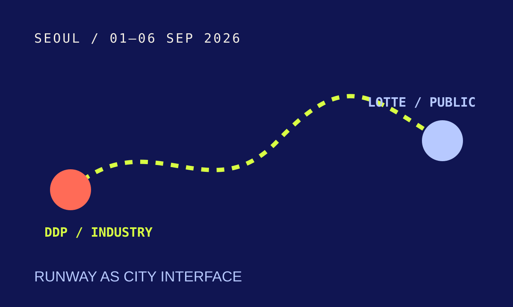
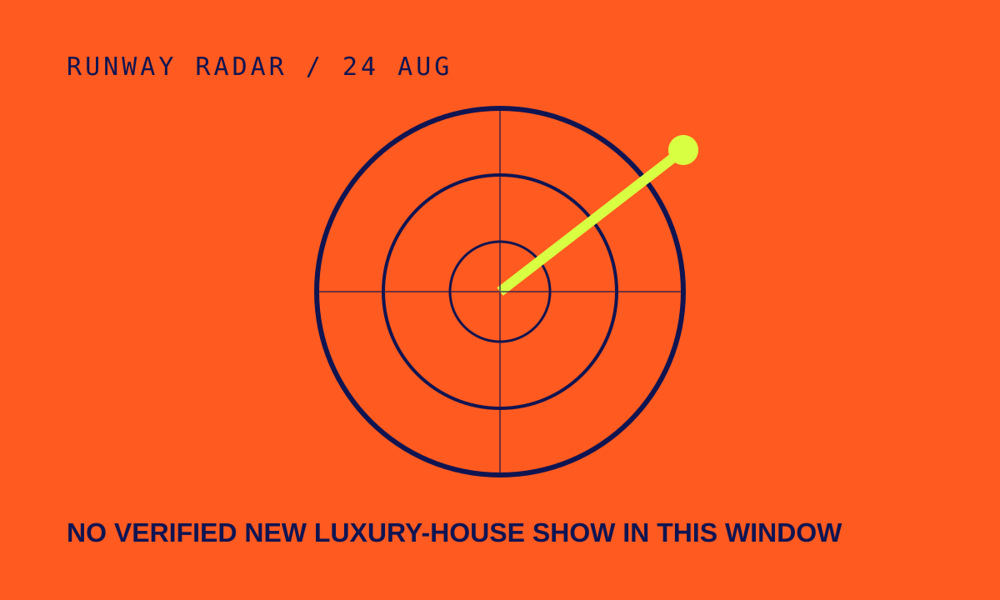

文化正在换入口
THE ENTRY POINT IS MOVING
Supreme 把每周的发售时间做成一种公共钟表；Stüssy 把同一批秋季商品切成不同地区的十点；BAPE 与 ©SAINT Mxxxxxx 把做旧图像推到一张罐头凳；SFMOMA 用七万五千个小单元占领免费大厅。文化新闻这几天反复出现同一个动作：内容不只被发布，它还在重新安排人们进入的时间、地点和距离。
Supreme turns a weekly release into a public clock; Stüssy splits one seasonal drop across regional tens; BAPE and ©SAINT Mxxxxxx move a worn graphic onto a can stool; SFMOMA fills a free hall with 75,000 small units. The signal is not a single trend. It is a change in the entry point.
本期判断
本期只选择能在官方页面或明确署名的报道中重新核验的动作。品牌发售、展览、论坛和即将到来的时装周被放在同一张地图上，但不被强行说成一个趋势。没有找到足够新的奢侈品牌秀场，就保留空位，不用旧图或模糊消息填满雷达。
这是一份 8 月 24 日的现场版预览，不是 8 月 25 日候选稿的提前上线。资料核验与内容锁定均发生在 2026-08-24（Asia/Shanghai）；因错过 V3 的 06:00–08:30 生产刷新窗口，本期只作为非生产 Preview。
Enter the issue01 / COVER — Supreme 把星期四变成一只公共钟表

Supreme 官方商店在纽约时间 8 月 20 日 07:07 留下 Fall/Winter 2026 即将重开的提示；8 月 23 日的官方 New 页面已经显示新一轮商品。对熟悉它的人来说，星期四不是一个普通日期，而是一种反复出现的等待、刷新和售罄节奏。
这里值得记录的不是某一件外套有多快售罄，而是时间本身被做成了产品界面。它把分散在不同城市的注意力压到一个共同窗口，也让“我有没有赶上”成为参与感的一部分。我们只能确认页面状态和发售窗口，不能从页面直接推出销量或文化影响。
本周的潮流地图因此从“买什么”先移到“什么时候一起看”。
来源：Supreme official store, 2026-08-20/23 · Supreme Fall/Winter 2026, Hypebeast
02 / MAJOR — Stüssy 把同一场发售切成五个时区

Stüssy 官方在 8 月 18 日公布 Fall ’26 Collection，并把全球发售固定在 8 月 21 日星期五上午十点：北美 PST、英国 GMT、欧洲 CET、日本与韩国 JST/KST。它不是一场秀，而是一套非常清楚的地域化发布节奏。
同一个系列被拆成多个“现在”。对品牌来说，这是库存与社区的安排；对读者来说，它把全球街头服饰的想象变成了一张可以自己对时的地图。重要的是，官方页面只承诺指定 Chapter stores 与 stussy.com 的发售，不替我们保证每个地区的库存或热度。
发售做得越像一场全球广播，编辑越需要把时区、渠道和“已确认/未确认”分开写。
03 / SIGNAL — BAPE 的旧感从 T 恤长到一张罐头凳
BAPE 与 ©SAINT Mxxxxxx 的 Fall/Winter 2026 合作分两段发布：8 月 22 日先进入授权零售商，8 月 23 日进入 BAPE 门店与官网。官方列出的 DROP1 同时有图像 T 恤、长袖、袜子和 Can Stool。
这张凳子不是“生活方式已经改变”的证据，它只是一个清楚的边界移动：一套从 1990 年代美国音乐、时尚与艺术取来的做旧图像，不再只停在身体上，也进入房间。服装、周边和家具之间的距离被压缩，品牌的世界观因此多占了一块地面。
来源：BAPE official release information, 2026-08-22/23 · BAPE × ©SAINT Mxxxxxx, Hypebeast
04 / SIGNAL — 七万五千个小单元，让免费大厅变成一片云

SFMOMA 的 Jacob Hashimoto: Giant Arc 于 8 月 22 日在一层 Roberts Family Gallery 开放。美术馆称作品由近 75,000 个竹与日本纸制成的风筝单元构成，从地面延伸到天花与墙面；所在楼层对公众免费开放。
它的公共性不是一句“欢迎大家”就结束了。作品先占据入口附近的日常动线，观众在决定要不要购票、要不要深入之前，已经被迫经过一片人工天气。规模在这里不是炫技，而是改变第一眼的顺序。
05 / SIGNAL — 谁来策展，先于展了什么改变房间

Southbank Centre 将在 10 月 16 日至 11 月 29 日呈现《Rock, Paper, Scissors》。展览从 2026 Koestler Awards 的投稿中选择作品，由五位有父母入狱经历的 Parental Imprisonment Collective 成员共同策展。公开报道同时说明，参展艺术家的姓名仍不会向观众公开。
这条新闻还没有发生在现场，所以今天只记录它提出的结构：生活经验进入选择与排序的位置，却没有自动获得署名。一次邀请可以制造“被看见”，但作者位置需要更具体的权力。展览开幕后，才有资格复查这个承诺是否真的在房间里成立。
来源：The Art Newspaper, 2026-08-21 · Southbank Centre programme
06 / WATCH — 首尔把时装周从一栋楼搬成一条城市线路

首尔市政府公布的 2027 春夏首尔时装周将在 9 月 1 日至 6 日横跨 DDP 与蚕室乐天世界塔：DDP 继续承担设计师秀、发布与贸易；乐天一侧加入面向公众的秀场、快闪、购物与 K-culture 活动。
这不是今天刚发生的奢侈品牌大秀，因此不把它冒充成“本周 runway 新闻”。它是一条即将打开的观察线：专业信用与公众入口被放进两个场地，行业事件会不会因此真的多出一种观看方式，还是只多出一层消费路径。
07 / WATCH — 奢侈品牌秀场：这一轮先不硬凑

我们重新查看了 Vogue 的当季秀场索引与日本时装周官方日程，没有找到 8 月 22—24 日之间可以由品牌或主办方直接核验、且足以作为“最新奢侈品牌秀场”发布的单一事件。这个空位本身值得保留：旧照片、二手标题和提前很久结束的系列，不能伪装成今天的现场。
下一次扫描会继续沿着品牌官网、官方周历和主办方页面复查。若出现可核验的新秀场，再把品牌、城市、发布时间和现场观察补进来；在此之前，雷达写“未确认”，比写一条漂亮但过期的新闻更诚实。
来源：Vogue Fashion Shows index · Rakuten Fashion Week TOKYO official schedule
08 / WATCH — 台北音乐博览会，把“舞台之外”列进日程

2026 TMEX 台北音乐博览会将于 8 月 27 日至 30 日在台北流行音乐中心举行。官方公布的论坛覆盖可持续演出、国际营销、AI 进入创作流程、国际音乐节策展，以及“声音、影像与空间”中的电子音乐，并列出 68 个国内外参展品牌和一对一产业媒合。
现在能确认的是议程，不是结果。活动结束后再回看：论坛有没有留下具体方法，展商和媒合有没有改变创作者进入产业的路径。对于潮流地图来说，音乐产业的“舞台之外”同样是文化正在换入口的地方。
EXIT / 入口移动以后
发售有时间，展览有房间，秀场有城市，论坛有一张尚未兑现的日程。
今天没有把它们压成一个趋势。先把入口标出来，等现场自己说话。